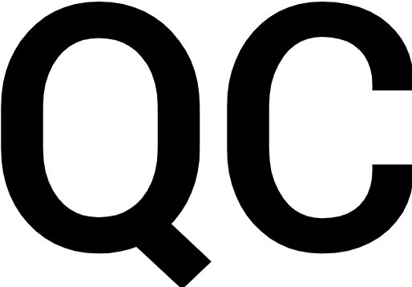

Zian Khan
Computer Science Student at Queens College
I am currently pursuing my Computer Science degree at Queens College and plan on graduating in Fall 2021. After graduating, I plan to display my leadership, analytical, and coding skills in the working field to fuel the already rapidly-growing industry of technology. I also aim to grow my network while leaning more about software development so that I can make an impact in the areas that I can.
In addition to pursuing my degree, I also take the time to increase my knowledge on financial literacy such as avoiding/handling debt, investing in both the long and short term and learning about money as a whole. I also love engaging in playing and watching basketball. Aside from playing in private leagues/tournaments I also trade NBA NFT's in my free time.
Featured Projects
QCFirst
A course enrollment website that allows both instructors and students to register and drop courses once they are logged in. Along with a partner, I developed the design and implementation of both the front-end and the back-end functionalities that supports the application.
Link to RepoWork Experience
Sales Associate at Club Demo Services
May 2018 - September 2018
Key contributions:
- Collaborated with brands to display/demonstrate products in shop, engaging with customers and helping drive sales.
- Created robust sales plans to efficiently and effectively raise brand awareness.
Network Technician at Givergy US-NY
Freelance
November 2019 - January 2020
Key contributions:
- Setup networking infrastructure (servers, hotspots) with corresponding hardware upgrades for clients.
- Maintained and organized equipment needed for operations while also performing routine QA on client setup.
Education
Queens College - Flushing, NY
Bachelor of Arts
Major in Computer Science